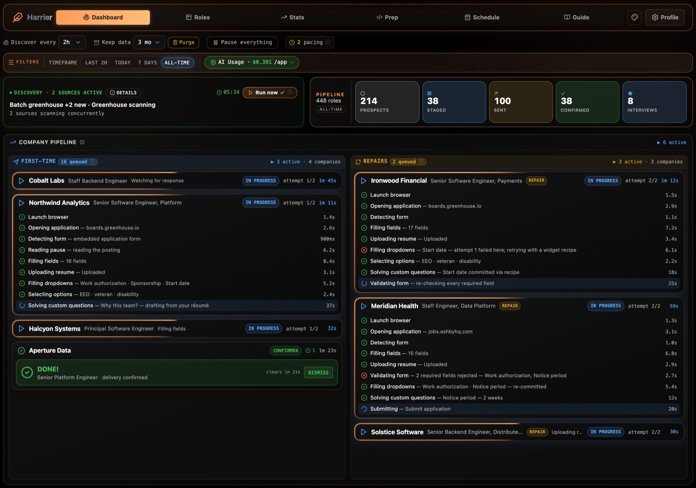

01
Tell it who you are
Your titles, your stack, what you'd say yes to. A few minutes, once — it becomes the brief for everything that follows.
Searching for work is a full-time job. Harrier works it for you — sweeps the boards for roles that fit, tailors a résumé for each one, and applies. Every day.
~20 applications a day· 46% sent within the hour· 45% sent overnight· 16 application systems
Two months on one machine, rounded down. "Within the hour" and "overnight" are shares of every application sent.
The day-to-day rates Harrier actually sustains — measured over two months of running nonstop on a single machine. Read top to bottom: from the roles it surfaces each day down to the recruiter calls that come back.
From a deliberately narrow search — senior, remote-only, high salary floor. A wider net finds more.
Live openings Harrier surfaces and matches to your profile — around sixty every day, across every board it covers.
Each with a résumé tailored to the role, the form filled, and submitted end to end. A full day's applying, done before you wake up.
The share employers confirm receiving — a real delivery signal (confirmation email, ATS receipt, or assessment invite), not a silent void.
Companies that wrote back wanting to talk — sixteen of them over two months. The reason the rest of this exists.
Two months on one machine. Real data, not projections.
No dashboards to babysit, no forms to fill. You set it up once and it works the boards on its own.
Your titles, your stack, what you'd say yes to. A few minutes, once — it becomes the brief for everything that follows.
It quarters the boards the way a harrier works a field — low, slow, overlapping passes that miss nothing. Every role that fits gets a tailored résumé, a filled form, a submission.
Replies land in your inbox. Harrier is still out there working while you prep for the interviews that matter.
Every application, step by step, as it happens. And when a form fights back, you watch it get diagnosed and retried — not silently dropped.

Harrier is deliberately boring about the things that matter: where it runs, what it touches, and how fast it moves.
It's software you run, not a service you upload to. Your laptop does the work.
Your résumé, history, and answers live on your disk — there's no Harrier server collecting them. The only data that leaves is what's sent to Anthropic's AI, on your own key.
Strict per-company limits — enforced independently and cross-process — mean it never piles applications onto a single employer, on any supported ATS.
Set daily and lifetime dollar limits. When it reaches one, Harrier pauses before it spends more.
Harrier runs on your own computer, so a little setup is yours. Nothing exotic — just keep an eye on the disk.
macOS, Linux, or Windows. It keeps sweeping around the clock, so it needs to stay running while you're away from the desk.
The one to watch. Everything stays local — the browser, your tailored résumés, the application record. On a base MacBook Air, this is the real constraint.
A one-command setup installs anything you're missing. Plan for about 2 GB of free memory while it's actively applying — it drives a real Chrome.
The AI runs on your own key, so the spend is yours to control — set daily and lifetime caps. Budget a few dollars a day of usage.
Not open for public signups yet — I'm onboarding a few people at a time, by hand.
Request an inviteRuns on your own machine · no server of ours in the loop